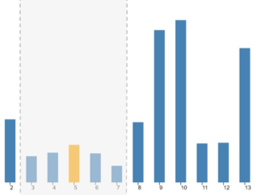

Neighborhood Perception in Bar Charts


Venue. CHI (2019)
Abstract. In this paper, we report three user experiments that investigate in how far the perception of a bar in a bar chart changes based on the height of its neighboring bars. We hypothesized that the perception of the very same bar, for instance, might differ when it is surrounded by the top highest vs. the top lowest bars. Our results show that such neighborhood effects exist: a target bar surrounded by high neighbor bars, is perceived to be lower as the same bar surrounded with low neighbors. Yet, the effect size of this neighborhood effect is small compared to other data-inherent effects: the judgment accuracy largely depends on the target bar rank, number of data items, and other data characteristics of the dataset. Based on the findings, we discuss design implications for perceptually optimizing bar charts.
Link to this page: